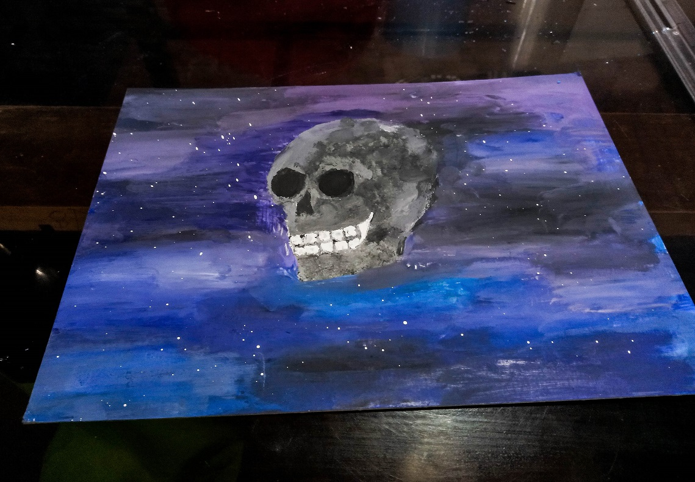
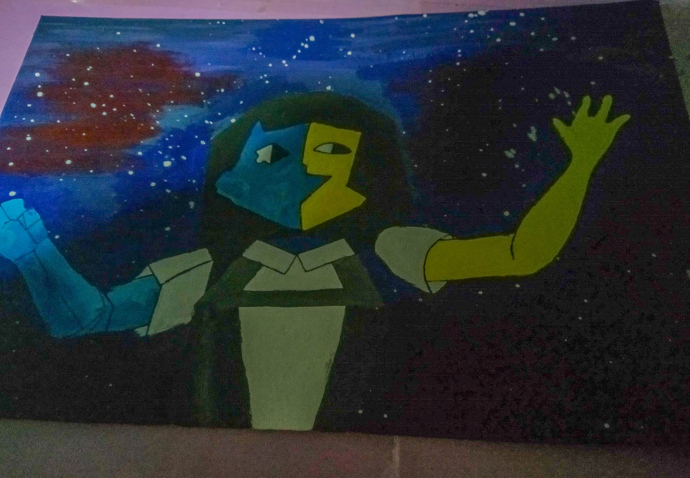
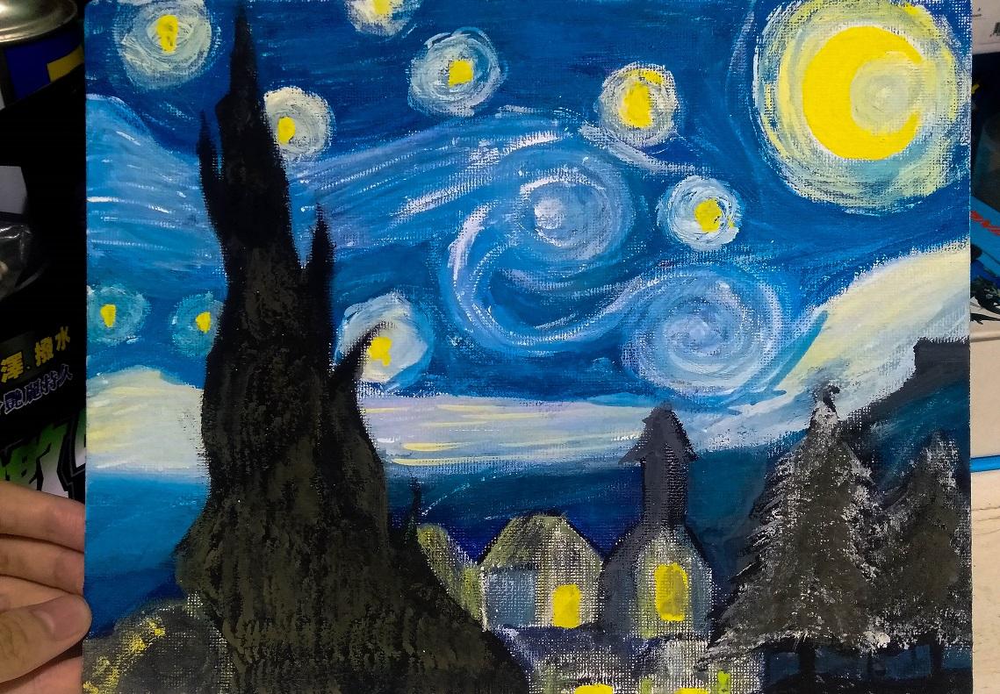
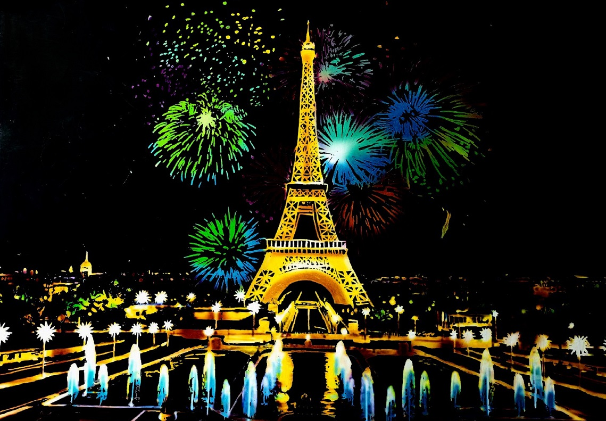

Skull
I used acrylic paint to create this artwork and used the splashing with the brush technique for the stars.

ENA
I also used acrylic paint to create this artwork. ƎNA is character created by the animator Joel Guerra. The episodes centre around the main character, Ena, a girl with many personalities. Ena's character design is inspired by Picasso's "Girl before a Mirror".

Starry Night
I used acrylic paint to create this artwork, inspired by Starry Night artwork of Vincent Van Gogh.

Eiffel Tower
This is scratch painting. My brother and I created this together. We were following a pattern while creating this.